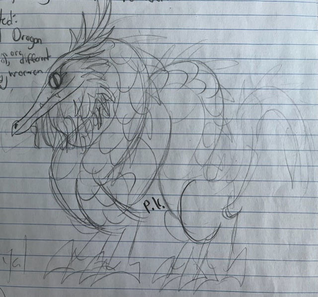

ROYAL DRAGON
The largest of all dragons, and one of the biggest land-predators on Earth, the Royal Dragon is a truly remarkable creature. The source of it's name is obvious from one glance at it's magnificent mane and jewel-tone scales. Spending it's time lounging on river-beaches or swimming through pond-scum, it has captured the imagination of human beings for centuries.
An excellent fisherman and hunter, the Royal Dragon is the undisputed king of it's domain, moving across land and through water with equal ease. Solitary in nature, it slips through the murk searching for prey, striking at them with it's crocodilian jaws and sharp talons. Graceful and glorious, despite it's lack of wings; it's not hard to understand this dragon's prominence in myths and folklore.
IDENTIFICATION
| Habitat: | Freshwater rivers and lakes throughout east Asia. |
|---|---|
| Size: | The largest of all dragons, exceeded in height only by the Greater Seadragon and unmatched in length or weight. Specifics TBD. |
| ID: | Long, serpentine body, short legs, low-to-the-ground stance. Feathery mane and 'beard' give it a regal appearance. Long, crocodilian jaws, lined with straight, sharp teeth for catching fish. Lacks wings entirely. 'Antler-like' horns branch in two or three directions at the midpoint; sandy brown in colour. Rounded back spines, darker brown in colour. Long, flexible tail ends in feathery crest. |
| Colour: | A variety of cool shades are known, including deep greens, peacock-teals, dark blues and even purplish tones. Feathers tend to be pale-yellow in colour. |
| Habits: | Crepuscular piscivores; royal dragons laze about in lakes or on river shores for most of the day and night, becoming more active around sunrise and sunset to hunt fish and other aquatic animals. Often swims along the bottom of the water, using it's claws to grip rocks and branches along the lake-bottom. Capable of holding it's breath for up to ten minutes. Generally solitary, meeting only to mate. |
| Diet: | A variety of aquatic creatures; fish, turtles, amphibians, and even small crocodilians all commonly taken. Land animals stopping for a drink also make up a fair part of this dragon's diet. |
| Nesting: | Males and females meet only rarely, during the springtime. Males compete through complex 'dancing' displays in the water, while females watch from shore. Female lays two eggs in a dug-out nest near the shoreline. Eggs are round and mottled-brown in colour. Young are raised alone by the mother. |
Similar Species:
Gilded Dragon: Closely-related; similar in overall anatomy and behaviour, with an overlapping range; differentiated by namesake gold spines, smaller size, and warmer colouration.
NOTES
When I started this project, I knew I had to have a classic Asian dragon-styled dragon. This kind of dragon has long been my favourite, or at least the kind that I draw in my school note's margins the most.
The aquatic associations of these dragons lent themselves to behaviour and physiology extremely easily, as did their lack of wings. I think it's a neat contrast to the western Seadragons, and their wing-propelled swimming.
Real-life inspirations for the Royal Dragon include the general lifestyle of crocodiles and alligators, the underwater-walking of hippopotami, and the stealthy swimming of sea-snakes.
Similarly to the European Mountain-Dragon, the cultural inspirations for them are broad, including folklore from China, Japan, and Korea, and modern ideas of 'regal' animals such as lions and tigers.
The Royal Dragon is undoubtedly one of the most prominent and well-known species of dragon in-world, and appears as a motif in art throughout human history.
Taxonomy-wise, it belongs to the 'feathered dragons', which, as you can probably guess, possess feathers (though several are entirely wingless). The evolutionary history of these dragons is of great concern to paleontologists debating when feathers arose among archosaurs; some say they were present on even very early dinosaurs and pterosaurs, as a common feature among the group, while others claim it to be convergent evolution due to the lack of fossil-evidence for feathers on early dragon species. Who knows?